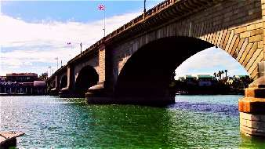

Борис Акунин
Мой календарь
Очень многие российские уроженцы не пригодились там, где уродились, и переехали жить в другие страны. (Я и сам из их числа). Я считаю неправильным, что у нас нет своего праздника. Предлагаю отмечать его сегодня.
18 апреля 1968 года одна из главных достопримечательностей британской столицы, Лондонский мост, решила навсегда покинуть родину.
Мост был старый и ветхий, находился в аварийном состоянии. Чем его ремонтировать, дешевле было построить новый. Но и разобрать сооружение для городского бюджета тоже выходило накладно.
Проблема решилась нестандартно и ко всеобщей выгоде.
Американский девелопер Роберт Мак-Каллох, собиравшийся построить в аризонской глуши новый город и ломавший голову, как бы заманить в эту дыру клиентов, сказал: «А давайте я куплю мост, если он вам не нужен». И купил. Самый чудной в истории мостостроительства контракт был подписан как раз в этот апрельский день.
Американец на собственные деньги разобрал конструкцию и еще заплатил городу круглую сумму, пошедшую на строительство нового London Bridge. Каменные блоки были пронумерованы, и всё это гигантское Лего воскресло в пустыне, соединив берега еще не существующей реки (она появится позже).
Городок Лейк-Хавасу-сити прославился на весь мир, недвижимость в нем благополучно распродалась, и сейчас туда ездят туристы - посмотреть на аутентичный Ландон-бридж.
Эмигранты и экспаты, не грустите и не вздыхайте. Будьте как Лондонский мост, который пригодился не там, где родился.